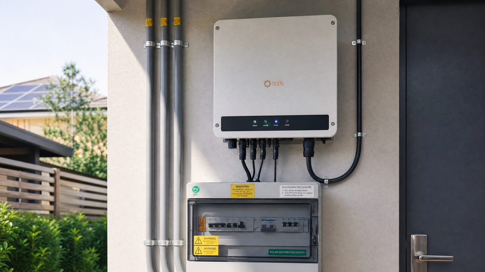

Solar quotes obsess over panel brand and count, but the inverter quietly governs more of your long-term outcome than almost anything else in the box. It throttles your peak power, decides how your system behaves in shade and low light, connects or refuses to connect a battery, and is the single most common point of failure in the first five years. Choose wrong and you lose 3-5% of lifetime production, pay for expensive retrofits, or — in the worst case — void your panel warranty by exceeding DC input limits.
This guide walks through the decision the way a working engineer does: first pick the type, then the size, then the quality details that survive a twenty-year life in the field. Every section ends with the practical check you can do with the quote in your hand.
The four inverter types, honestly compared
A string inverter takes all panels in series and converts them as one unit. It is the cheapest per watt — typically $0.15-0.22/W in 2026 — and works beautifully on a clean, unshaded, single-plane roof. Its weakness is shade: one shaded panel drags down its entire string, and once it dies your whole system goes dark. A microinverter sits behind every panel and converts at module level. Shade on one panel no longer affects the others, and you get panel-level monitoring; the cost runs $0.35-0.45/W installed. A hybrid inverter adds a battery port — one unit manages solar, the grid and battery charging together, which is the cleanest architecture for any new system that might store energy. An off-grid inverter only appears where there is no utility connection; it must handle surge loads and generator backup on its own.
| Type | Best for | 2026 price ($/W) | Weakness |
|---|---|---|---|
| String | Clean unshaded roofs, tight budgets | 0.15 – 0.22 | Shade drags down the whole string |
| Microinverter | Shaded roofs, multiple planes, monitoring | 0.35 – 0.45 | Twice the electronics, more failure points |
| Hybrid | Solar + battery projects, backup plans | 0.25 – 0.40 | Vendor lock-in to one battery brand |
| Off-grid | Remote sites, wells, farms without grid | 0.30 – 0.50 | Must be oversized for surge loads |
How much inverter do you actually need?
The single biggest sizing mistake is matching inverter watts to panel watts one-to-one. Inverters are rated for continuous output at 45 degrees C, while panels produce their nameplate only briefly on cold sunny mornings. The industry norm is a DC-to-AC ratio of 1.1 to 1.3 — meaning a 6.6 kW array happily runs on a 5 kW string inverter with only 1-2% annual clipping. Undersizing below your winter peak (when production is lowest anyway) saves real money; undersizing below your summer peak clips energy you would otherwise export at retail rates.
Surge matters even more for off-grid and battery systems: a well pump or refrigerator compressor can draw 4-6 times its running wattage for a few seconds. A 3 kW off-grid inverter powering a pump may need a 5 kW unit to survive the start. Always check the surge rating, not just the continuous rating — this is the number that kills cheap inverters in the field.
| Array size | String inverter (1.2 ratio) | Hybrid (with 5 kWh battery) | Microinverters (count) |
|---|---|---|---|
| 3 kW | 2.5 – 3 kW | 3 kW hybrid, ~$1,100 | 7 × 450 W micro |
| 5 kW | 4 – 4.2 kW | 5 kW hybrid, ~$1,500 | 11 × 450 W micro |
| 10 kW | 8 – 9 kW | 10 kW hybrid, ~$2,600 | 22 × 450 W micro |
Prices are unit-only street prices in 2026 for mid-tier branded equipment; installation and balance-of-system costs are separate. Sizing follows the 1.2 DC/AC rule described above.
MPPT count: why two trackers beat one
Each MPPT channel handles a separate string orientation or tilt. A roof with east and west faces, or a single roof plus a ground array, performs measurably better with a two-MPPT inverter than a single-MPPT unit, because each string tracks its own maximum independently. The price gap is now small (roughly $80-150), which is why a dual-MPPT inverter is the default recommendation unless the entire array faces one direction on one plane. For three or more orientations, step up to three MPPTs or use power optimizers.
The quality details that survive twenty years
Efficiency numbers on spec sheets are peak values taken at perfect conditions; what actually matters is the weighted efficiency curve (CEC or Euro), because your inverter spends most of its life at partial load. The gap between a 97% and 98.5% weighted unit is 1.5-2% of lifetime energy — about 1,500-2,000 kWh over twenty years on a typical residential system. IP rating determines where the unit can live: IP65 units survive outdoors exposed; IP42 needs a shaded wall or shed; indoor-only units in a hot attic derate badly in summer. Cooling design matters too — fan-cooled units move more dust in desert environments and the fans are a failure item; fanless convection designs (common above 5 kW) are quieter and more reliable in dusty, sandy air.
Warranty is where cheap brands show their true cost. A 5-year warranty that requires the unit to be shipped back to the factory — often across an ocean — can strand your system for weeks. Look for 10-12 years of on-site replacement from a brand with local service stock. And register the serial number at installation: some warranties run from shipment date, not installation date, and an unregistered unit can lose years of coverage.
Red flags in any inverter quote
Four things expose an inflated or risky quote quickly. One: the inverter DC input limit is below your array's cold-weather voltage — check Voc multiplied by the temperature coefficient at your coldest expected temperature. Two: the quoted efficiency is peak-only with no weighted figure published; ask for the CEC or Euro number. Three: the warranty is five years with return-to-factory service in another country; that is a hidden five-figure labor risk. Four: a hybrid inverter locked to a single battery brand with no certification for alternatives — that lock-in becomes expensive the moment the battery vendor changes pricing or exits the market. Run these four checks against any quote before signing and you will avoid the vast majority of bad installs.
Common inverter questions, answered
"Can I use one string inverter for panels on different roofs?" Yes, if it has two MPPTs — one string per roof plane. With a single-MPPT unit, mismatched orientations cost you real energy every day, so upgrade to dual-MPPT or add optimizers.
"Do microinverters last as long as string inverters?" Usually longer — microinverters carry 25-year warranties in many cases versus 10-12 for string units, partly because each one dissipates less heat. Their failure rate is lower per unit, though a system with twenty of them has more total electronics.
"What happens when the grid goes down with a normal string inverter?" It shuts off automatically — anti-islanding protection prevents it from energizing a dead grid that lineworkers might be repairing. If backup power matters, you need a hybrid inverter with battery or a dedicated battery inverter with islanding capability.
"Is a bigger inverter always better?" No. Oversizing beyond a 1.3 DC/AC ratio adds cost for nearly zero extra energy, and an oversized inverter running at very low load operates at its worst efficiency point most of the day. Size to your array with the 1.1-1.3 rule and let the numbers decide.
Frequently asked questions
Do I need a string inverter, microinverters, or a hybrid inverter?
It depends on your wiring. A string inverter is the cheapest option per watt and suits a clean, unshaded roof. Microinverters give panel-level control and shine when shading, multiple roof planes or module-level monitoring matter. A hybrid inverter adds a battery port so you can store solar for night use without a separate battery inverter — the right choice for most new battery projects in 2026. An off-grid inverter is only needed when there is no grid connection at all.
How do I size an inverter for my solar array?
Match the inverter's continuous watt rating to your array with a DC-to-AC ratio between 1.0 and 1.3. A 5 kW array feeding a 4 kW string inverter (ratio 1.25) clips only a few percent of annual output while costing much less than a 5 kW unit. Never undersize below your winter peak, and check the manufacturer's max DC input limit — exceeding it voids the warranty.
Why do inverter prices vary so much between brands?
The spread comes from efficiency (97% versus 98.5%+), cooling design, IP rating, MPPT count, transformer quality, warranty length (5 versus 10-12 years), and local service support. A branded 5 kW string inverter ran roughly $800-1,200 in 2026 while a budget import with the same nameplate rating can cost half that but often has worse low-light efficiency and a short warranty.
Does inverter efficiency really matter?
Yes — the difference between a 97% and 98.5% efficient inverter is about 1.5% of your annual energy, roughly 75-100 kWh per year on a 5 kW system. Over 20 years that adds up to 1,500-2,000 kWh. Efficiency also drops at low load, so check the CEC or European efficiency curve, not just the peak number.
What should I check in the warranty?
Look for at least 10 years of product warranty and confirm what it covers: parts, labor, shipping, and whether replacement is on-site or mail-in. Check the thermal shutdown behavior — inverters in hot climates derate above 45 degrees C, and a warranty that requires a roof removal for service makes that worse. Register the serial number immediately; many warranties start at shipment, not installation.
Can I add batteries later with a normal string inverter?
Only through an AC-coupled battery inverter, which adds cost and a conversion loss (typically 3-5% round trip). If there is any chance of a battery within the next few years, buying a hybrid inverter from the start is cheaper and more efficient than retrofitting an AC-coupled unit onto a standard string inverter.